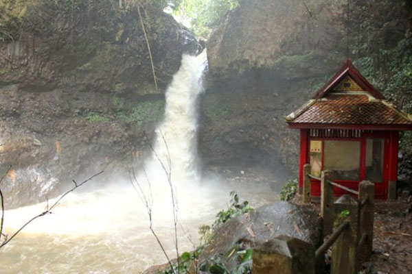
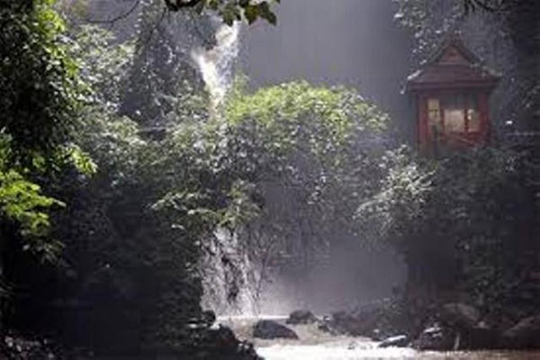
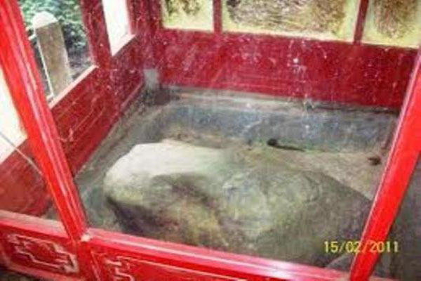

- 
SELAMAT DATANG DI WISATA CURUG DAGO
Wisata Curug Dago adalah wisata air terjun di Bandung yang memiliki nilai sejarah tinggi. Curug dalam bahasa Sunda memiliki arti air terjun. Di Bandung sendiri memang terdapat banyak air terjun mengingat Bandung yang secara geografis dikelilingi oleh kawasan perbukitan. -

SELAMAT DATANG DI WISATA CURUG DAGO
Wisata Curug Dago adalah wisata air terjun di Bandung yang memiliki nilai sejarah tinggi. Curug dalam bahasa Sunda memiliki arti air terjun. Di Bandung sendiri memang terdapat banyak air terjun mengingat Bandung yang secara geografis dikelilingi oleh kawasan perbukitan. - 
SELAMAT DATANG DI WISATA CURUG DAGO
Wisata Curug Dago adalah wisata air terjun di Bandung yang memiliki nilai sejarah tinggi. Curug dalam bahasa Sunda memiliki arti air terjun. Di Bandung sendiri memang terdapat banyak air terjun mengingat Bandung yang secara geografis dikelilingi oleh kawasan perbukitan. - 
SELAMAT DATANG DI WISATA CURUG DAGO
Wisata Curug Dago adalah wisata air terjun di Bandung yang memiliki nilai sejarah tinggi. Curug dalam bahasa Sunda memiliki arti air terjun. Di Bandung sendiri memang terdapat banyak air terjun mengingat Bandung yang secara geografis dikelilingi oleh kawasan perbukitan. -

SELAMAT DATANG DI WISATA CURUG DAGO
Wisata Curug Dago adalah wisata air terjun di Bandung yang memiliki nilai sejarah tinggi. Curug dalam bahasa Sunda memiliki arti air terjun. Di Bandung sendiri memang terdapat banyak air terjun mengingat Bandung yang secara geografis dikelilingi oleh kawasan perbukitan.
Rahasia Tersembunyi
Curug Dago Bandung
Jejak Sejarah Kerajaan Thailand di Curug Dago
Raja Rama V mengunjungi Curug Dago sekitar tahun 1896 silam. Kemudian beliau kembali mengunjunginya untuk kali kedua pada tahun 1901.
Lokasi atau Alamat
Curug Dago
Jam Buka dan Harga tiket Masuk Curug Dago
Ayo bantu lestarikan Curug Dago agar selalu menjadi tempat wisata yang indah dan mendunia sebagai warisan budaya Indonesia. Save Curug Dago, Start From You!
2. Harga Tiket Masuk Untuk masuk ke area wisata Curug Dago Anda akan dikenai tiket sebesar Rp. 5000,- setiap orangnya. Sedangkan untuk parkir kendaraan dikenai tarif Rp. 2000,- untuk sepeda motor.
Fasilitas Umum di Curug Dago
2. Rumah Makan Untuk urusan makan, di sekitar Curug Dago ini juga terdapat beberapa warung sederhana yang menjual makanan ringan seperti gorengan, kacang rebus dan nasi.
3. Area Parkir. Tempat parkir di objek wisata Curug Dago cukup luas untuk menampung ratusan kendaraan sepeda motor.
Cara Menuju Curug Dago
Setelah bertemu dengan jalan simpang dua, masuk ke jalan sebelah kiri yang menurun ke arah Curug Dago.
Jika menggunakan kendaraan umum, cara yang paling mudah adalah dengan menaiki angkot kemudian turun di Terminal Dago. Selanjutnya pergilah ke seberang terminal, kamu bisa menyambung perjalanan dengan naik ojek atau berjalan kaki sampai ke lokasi.
Tentang Kami
Curug Dago yang Tersembunyi ini adalah salah satu obyek wisata alam berupa air terjun yang masih perawan di daerah Bandung Jawa barat. Curug yang dalam bahasa Indonesia berarti Air terjun ini memang biasa terdapat di daerah daerah bandung, karena daerah bandung memang daerah yang dilingkari oleh perbukitan sehingga alamnya banyak menyajikan pemandangan yang sangat indah untuk dikunjungi. Curug dago ini berada di ketinggian 800 meter di atas permukaan laut dan terbentuk dari aliran sungai Cikapundung yang mengalir dari Maribaya ke kota Bandung. Yang istimewa dari objek wisata ini yaitu banyaknya prasasti kerajaan Thailand yang terletak tidak jauh dari lokasi air terjun. Beberapa di antara peninggalan bekas kerajaan Thailand adalah dua prasasti batu tulis peninggalan tahun 1818. Kedua prasasti tersebut konon merupakan peninggalan Raja Rama V dan Raja Rama VII dari dinasti Chakri yang pernah berkunjung ke Curug Dago. Curug Dago memang masih belum banyak diketahui oleh masyarakat luas karena tempatnya yang tersembunyi dan kurangnya publikasi atau sosialiasi terhadap wisata alam yang indah ini. Curug Dago sering digunakan untuk aktivitas hiking, pemotretan maupun hanya sekedar berekreasi menghabiskan waktu liburan bersama keluarga, teman, sahabat maupun pasangan. .
Apa Yang Menarik Dari Curug Dago
Curug Dago sebenarnya memiliki sisi menarik dari segi sejarah. Jika ingin menikmati keindahan alam sebaiknya pilih saja yang letaknya tidak terlalu jauh dari sini.
Kondisi alam di sekitar lokasi memang sudah tidak seindah dulu lagi. Aliran air sungai yang semakin keruh ditambah lagi banyaknya sampah yang ditinggalkan oleh para pengunjung yang tidak bertanggung jawab menyebabkan tempat ini berkurang keasriannya. Padatnya pemukiman yang berada di daerah atas curug juga menjadi penyumbang sampah terbesar yang menyebabkan kotornya aliran sungai Cikapundung ke Curug Dago. Mungkin lain ceritanya pada zaman dulu ketika hutan masih rimbun dan air sungai masih jernih.GALERY
Curug Dago memang masih belum banyak diketahui oleh masyarakat luas karena tempatnya yang tersembunyi dan kurangnya publikasi atau sosialiasi terhadap wisata alam yang indah ini. Curug Dago sering digunakan untuk aktivitas hiking, pemotretan maupun hanya sekedar berekreasi menghabiskan waktu liburan bersama keluarga, teman, sahabat maupun pasangan.


{kind=link}
{kind=link}
{kind=link}
{kind=link}